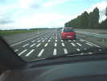
Soissons, la Nationale 2, un gros embouteillage pour "travaux" : après 1 km au pas, des balises réduisent la chaussée à une voie, pour chaque sens. On roule, bon, faut ce qu'il faut... Après 3 km, on arrive au bout des balises : il n'y a pas eu de travaux ! Ils doivent les poser pour s'amuser des usagers qui y perdent des heures, ou le vendredi pour être prêts le lundi matin !... Plus amusant, une portion sert depuis des années à des essais de peintures...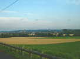
J'arrive à Soissons et ses églises, j'ai du temps, je continue un peu sur les vallonnements au Nord, vers Vauxrezis, à allure touristique...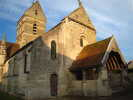
Il y a, à Vauxrezis, une belle église à base romane, avec surtout un porche très esthétique et à la charpente courbe magistrale... Mais la route passe au bord, alors je dormirai quand même à l'entrée du stade de Soissons...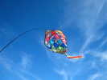
Dimanche matin, des Allemands ont commencé à monter des jardins du vent, avec entre autres ces belles lanternes vénitiennes, qui tournent évidemment !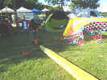
Johan, le Belge, a mis en batterie sa pompe pour ses deltas ! Il les gonfle maintenant dans le sac, ils se démêlent ensuite tout seuls quand on les sort ! Le boudin étanche est... de l'enveloppe de saucisson (du gros !).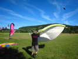
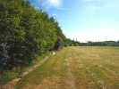
Le vent est encore un peu bizarre, je sors mon Spiralier, et pendant que je regarde Johan, l'oiseau va se cacher derrière une haie d'arbres !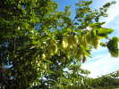
Ca me permet de découvrir ces belles fleurs sur un arbre. Ca ressemble à des fleurs de houblon avec des feuilles de charme...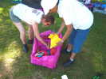
Retour sur le terrain, ces Hollandaises sortent des gadgets d'un sac vraiment bien agencé pour éviter les mélanges !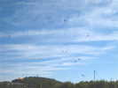
L'heure avance, il commence à y avoir du matériel en l'air, malgré le vent léger qui s'arrête parfois...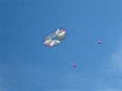
Michel Chantren est arrivé avec Astrid. Il a monté son Cercle-Pellibox... J'ai peur qu'il ne finisse tout blanc, au soleil, comme mon Spiralier...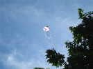
Astrid a sorti aussi son carré... qui a fait plusieurs passages dans les arbres, mais toujours sauvé par des acrobates grimpeurs...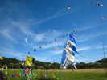
Emmanuel Duba est présent aussi avec son jardin de chats qu'il éloigne du public et réserve aux cervolistes ! Derrière, un embryon de train de manchots qui manque un peu de vent et qui a besoin d'un porteur...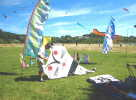
Mais Emmanuel ne fait pas que des jardins, il fait aussi voler... des chats, bien sûr !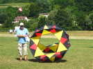
On retrouve aussi ce cerf-volant, intersection de 3 cercles, simple et esthétique, mais qui aurait besoin d'un peu plus de vent...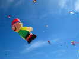
De petits gonflables commencent à monter, comme ce bonhomme issu sans doute d'un conte folklorique !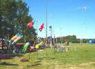
Des Jardins, allemands, français, britanniques ont fleuri tout au long de la rangée d'arbres, mais au soleil...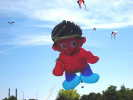
Cet amérindien est copié sur le bonhomme précédent, avec quelques modifications d'aspect. Il est aussi amusant et attendrissant...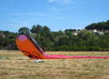
Sylvain et les Flandres'Envol sont arrivés, mais les gros gonflables en sont encore à se traîner par terre...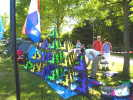
Voici un joli Bell en cours de montage. Il faudra un bon moment, aussi ils se sont mis à l'ombre...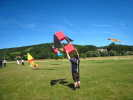
Dans le cadre des Bambous-Coton de notre hôte a été construit un Roi des Airs, projet pour un atelier futur... Kevin Cotard s'apprête au lancement inaugural, Bruno Kozon tire sur la ficelle...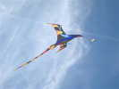
Un joli ptérodactyle, pas carré comme ceux qu'on voit habituellement, mais souple, fluide et aérodynamique comme devait être le vrai pour bien voler sans s'épuiser...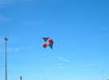
Ca y est, le Roi des Airs vole. Il faut pas mal de vent, il est un peu lourd ! Il me semble aussi que la vergue avant n'a pas une courbe régulière : trop forte au centre, trop droite sur les bouts d'aile : souplesse du bambou à adapter, ou coupe inadaptée de la voile, pas assez courbe au bord d'attaque ?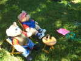
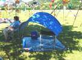
L'été est arrivé, ceux-là ont créé un abri très aéré pour les heures chaudes...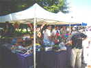
Les barnums ont été montés, de droite à gauche buffet pour l'apéro puis buvette, accueil puis vente d'enveloppes, vente d'articles divers préparés par les bénévoles artistes du club, boutique de Vire-Vole...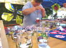
Les artistes au travail, celle-ci semble enfiler des perles ou fabriquer des badges en fil, devant des verres décorés !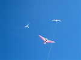
L'après-midi, ça vole mieux, Jean-Michel Gadomski monte son plus grand oiseau, Michel Dubuisson son Ramlal Tien et moi mon Spiralier que je vais bientôt abandonner pour plus lourd...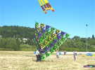
Le Bell est terminé, et on se lance dans les essais en vol... Il faut 3 personnes pour le porter sans l'abîmer et le mettre en position de départ...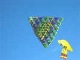
Ca y est, c'est parti, il vole, un peu lourdement, mais très stable... C'est normal, chaque cellule a un dièdre de 60 degrés, stabilisant quoique peu porteur !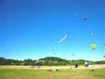
J'ai sorti mon Albatros 1 que j'ai un peu modifié à la maison et qui du coup veut absolument pencher à sa droite... Derrière, un presque méga-team de 8 BlackBirds s'entraînera longtemps...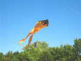
Jean-Michel (je crois) a fini par trouver le vent trop limité pour son oiseau et a sorti un Pyro très flammé...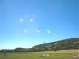
Les Pirates qui sont venus aussi en force présentent leur ballet de Nasa-Wings, quel que soit le vent !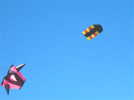
Michel a de la place sur son scooter, il n'a pas pris son matériel de camping pour la journée. Alors, il a plusieurs cerfs-volants dont ce Wassèges coloré...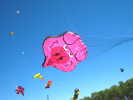
L'homme des cochons est aussi présent... Il s'est lancé dans la cochonnaille par hasard au vu d'une carte postale qu'on lui avait offerte, et depuis, il n'en démord plus !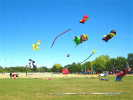
Les p'tits bonshommes volent ensemble, augmentés maintenant d'un Noir et d'un Chinois... Derrière, la Méduse a dû accrocher quelque chose...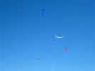
Bon, le vent est reparti, et l'Albatros aussi, avec quelques compagnons...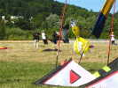
Monsieur Wang a monté un de ses grands aigles, pas le plus grand, mais le vent est trop juste !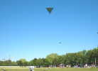
Le Bell est reparti pour un vol plus prolongé et plus élevé, cette fois... La stabilité reste impressionnante !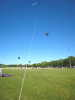
Le vent n'est pas énorme, mais petit-à-petit, j'arrive quand même à monter mon Albatros, par dessus le Bell, en saisissant les risées qui se présentent régulièrement...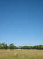